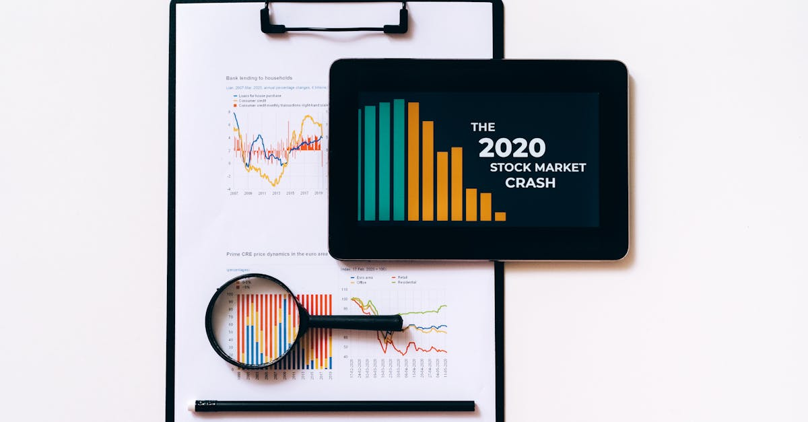

La BCE anticipe une accélération des rémunérations
La Banque Centrale Européenne (BCE) a récemment levé un coin du voile sur ses projections économiques, et une information retient particulièrement l'attention des marchés financiers : la croissance des salaires dans la zone euro devrait s'accélérer au cours du second semestre de cette année. Cette perspective soulève d'importantes questions quant à ses implications pour la politique monétaire, notamment la décision cruciale d'augmenter ou non les taux d'intérêt. Les spillovers des coûts énergétiques élevés, qui ont pesé sur les entreprises et les ménages, continuent d'être un facteur clé dans l'analyse de la BCE. Une hausse des salaires pourrait potentiellement alimenter les pressions inflationnistes, obligeant la banque centrale à réagir plus fermement pour maintenir la stabilité des prix. Les économistes scrutent désormais avec attention les indicateurs avancés, tels que les négociations collectives et les enquêtes auprès des entreprises, pour confirmer cette tendance. L'objectif est de comprendre si cette dynamique salariale est le signe d'un rattrapage après une période d'inflation élevée ou le début d'une spirale prix-salaires plus durable. Les répercussions sur le pouvoir d'achat des ménages sont également au cœur des préoccupations. Si les salaires augmentent plus vite que l'inflation, cela pourrait stimuler la consommation. À l'inverse, une hausse salariale insuffisante face à l'envolée des prix éroderait davantage le budget des familles. La BCE devra naviguer dans un environnement complexe, jonglant entre la nécessité de freiner l'inflation et celle de soutenir une économie encore fragile. Cette anticipation de la BCE est donc un signal fort pour tous les acteurs des marchés, y compris ceux qui s'intéressent aux actifs refuges comme l'or.
👉 À lire : Crise à Hormuz : L'Or, Référence Géopolitique
Inflation et pouvoir d'achat : le dilemme des ménages européens
L'inflation galopante a marqué les esprits et les portefeuilles des citoyens de la zone euro ces derniers mois. Si les prix de l'énergie ont montré des signes de stabilisation, d'autres postes de dépenses, comme l'alimentation et les services, continuent de peser sur le budget des ménages. Dans ce contexte, l'anticipation d'une accélération de la croissance des salaires par la BCE est une nouvelle potentiellement bienvenue. Elle suggère que les travailleurs pourraient enfin voir leur pouvoir d'achat se rétablir, voire s'améliorer. Cependant, le diable se cache souvent dans les détails. La question fondamentale est de savoir si cette hausse des salaires sera effectivement supérieure au taux d'inflation. Si les augmentations accordées ne compensent que partiellement la hausse des prix, le soulagement sera limité, et la frustration des ménages persistante. Les négociations salariales sont donc au centre de toutes les attentions. Les syndicats poussent pour des hausses significatives afin de récupérer les pertes subies. Les entreprises, quant à elles, sont confrontées à une double pression : l'augmentation des coûts des intrants (énergie, matières premières) et la demande de meilleurs salaires. Une hausse trop rapide ou trop importante des salaires pourrait, selon certaines analyses, contraindre les entreprises à répercuter ces coûts supplémentaires sur leurs prix de vente, alimentant ainsi une boucle inflationniste. La BCE surveille ce phénomène de près, car une telle dynamique pourrait rendre sa lutte contre l'inflation plus ardue et prolongée. Les données sur l'emploi et les salaires publiées dans les prochains mois seront cruciales pour évaluer la trajectoire réelle du pouvoir d'achat des Européens.
👉 À lire : Bénéfices d'entreprises : Wall Street rassurée, l'or en embuscade
L'or, valeur refuge face à l'incertitude monétaire
Dans un environnement économique marqué par l'incertitude, l'inflation persistante et les décisions potentiellement restrictives des banques centrales, l'or retrouve une place de choix dans les stratégies d'investissement. Traditionnellement considéré comme une valeur refuge, le métal jaune tend à conserver sa valeur en période de turbulences économiques et géopolitiques. L'annonce par la BCE d'une possible accélération de la croissance salariale, bien que potentiellement positive pour le pouvoir d'achat, introduit une nouvelle couche de complexité. Si cette hausse des salaires alimente l'inflation, elle pourrait pousser la BCE à maintenir une politique monétaire restrictive, voire à la durcir. Or, des taux d'intérêt plus élevés ont historiquement un impact mitigé sur le prix de l'or. D'un côté, ils augmentent le coût d'opportunité de détenir de l'or (qui ne rapporte pas d'intérêt). De l'autre, ils peuvent signaler une économie en difficulté, ce qui, paradoxalement, peut soutenir la demande d'or en tant que valeur refuge. Les investisseurs doivent donc peser ces facteurs contradictoires. De plus, la perspective d'une inflation plus tenace, même avec des salaires en hausse, maintient un attrait certain pour l'or comme couverture contre la dépréciation des monnaies fiduciaires. Les métaux précieux, en général, réagissent à ces dynamiques complexes. L'argent, par exemple, bien que plus volatil que l'or, peut également bénéficier d'un environnement inflationniste et d'une demande industrielle croissante. Les experts de GoldTrade AI suivent ces indicateurs de près pour anticiper les mouvements du marché.

L'intelligence artificielle au service du trading d'or
Face à la complexité des marchés financiers et aux signaux économiques contradictoires, l'exploitation des données et l'analyse prédictive deviennent essentielles. C'est là qu'intervient l'intelligence artificielle, particulièrement dans le domaine du trading de métaux précieux. Chez GoldTrade AI, nous avons développé un agent IA avancé, conçu pour naviguer ces marchés 24h/24 et 7j/7. Alors que la BCE ajuste sa politique en fonction des données salariales et inflationnistes, notre IA analyse en temps réel une multitude de facteurs : indicateurs macroéconomiques, tensions géopolitiques, flux de capitaux, données sur l'offre et la demande de métaux précieux, et bien sûr, les annonces des banques centrales. L'agent IA de GoldTrade AI ne se contente pas de réagir ; il apprend et s'adapte en continu. Il peut identifier des schémas subtils et des corrélations que l'œil humain pourrait manquer, permettant d'anticiper les mouvements du marché avec une précision accrue. Dans le contexte actuel, où la hausse des salaires en zone euro pourrait influencer les décisions de la BCE et, par conséquent, la valeur de l'or et des autres métaux précieux, notre technologie offre un avantage distinctif. Elle permet d'exécuter des transactions de manière autonome, optimisant les points d'entrée et de sortie pour maximiser les rendements potentiels, tout en gérant les risques de manière proactive. L'objectif est de transformer la volatilité et l'incertitude actuelles en opportunités de trading profitables pour nos utilisateurs.
Implications pour les taux d'intérêt et la politique monétaire
La perspective d'une croissance salariale accélérée dans la zone euro place la Banque Centrale Européenne devant un choix délicat. La mission première de la BCE est de maintenir la stabilité des prix, c'est-à-dire de garder l'inflation sous contrôle. Si les salaires augmentent significativement, cela pourrait exercer une pression à la hausse sur les prix, compliquant l'objectif de retour de l'inflation vers la cible de 2%. Dans ce scénario, la BCE pourrait se sentir obligée d'augmenter ses taux d'intérêt directeurs, ou du moins de les maintenir à un niveau élevé plus longtemps que prévu initialement. Une telle décision aurait des conséquences importantes. Pour les entreprises, des taux plus élevés signifient un coût du crédit plus important, ce qui pourrait freiner l'investissement et la croissance économique. Pour les ménages, cela se traduirait par des mensualités de crédit immobilier plus lourdes et un accès au financement plus coûteux. Cependant, il existe une autre lecture possible. Si l'accélération salariale est principalement une réponse à l'inflation passée et vise à restaurer le pouvoir d'achat, elle pourrait ne pas nécessairement déclencher une nouvelle flambée inflationniste. La BCE devra donc faire preuve de discernement, en analysant finement la nature de cette hausse salariale et son impact sur les anticipations d'inflation. La communication de la BCE sera cruciale dans les semaines à venir pour orienter les marchés et éviter des mouvements de panique. Les marchés financiers, et en particulier les marchés obligataires, réagiront vivement à tout indice suggérant un resserrement monétaire plus marqué.

Scénarios de marché : de l'optimisme prudent à l'aversion au risque
La conjonction d'une hausse des salaires anticipée et des décisions à venir de la BCE ouvre la porte à plusieurs scénarios de marché. Le scénario optimiste verrait les salaires augmenter suffisamment pour soutenir la consommation sans pour autant relancer une inflation incontrôlable. Dans cette hypothèse, la BCE pourrait adopter une approche plus mesurée, potentiellement signalant une pause dans le resserrement monétaire, voire une future détente. Les marchés actions pourraient en bénéficier, et la demande d'actifs plus risqués augmenterait. L'or, bien que toujours recherché comme valeur refuge, pourrait connaître une pression à la baisse relative face à un regain d'appétit pour le risque. Le scénario de stagflation persistante, plus préoccupant, impliquerait que la hausse des salaires, combinée aux coûts énergétiques encore élevés, alimente une inflation tenace. La BCE serait alors contrainte de maintenir des taux élevés, freinant la croissance économique tout en n'arrivant pas à maîtriser pleinement l'inflation. Ce contexte serait particulièrement favorable à l'or, qui excellerait en tant que protection contre l'érosion monétaire et l'incertitude économique. Les métaux précieux comme l'argent pourraient également montrer de la résilience, soutenus par une demande industrielle potentielle mais souffrant de leur volatilité accrue. Enfin, le scénario d'une récession imminente, déclenché par un resserrement monétaire trop agressif ou par des chocs externes, verrait une fuite généralisée vers la sécurité. Dans ce cas, l'or bénéficierait pleinement de son statut de valeur refuge ultime, tandis que les actions et les actifs plus risqués chuteraient. L'agent IA de GoldTrade AI est conçu pour analyser ces différents scénarios et adapter sa stratégie en temps réel, cherchant à identifier les opportunités les plus prometteuses tout en minimisant l'exposition aux risques.
Stratégies d'investissement à l'ère de l'IA et des incertitudes
Naviguer dans le paysage financier actuel, marqué par les annonces de la BCE sur les salaires et les taux d'intérêt potentiels, exige des stratégies d'investissement robustes et adaptatives. Pour les investisseurs traditionnels, l'heure est à la prudence et à la diversification. La détention d'une partie de son portefeuille en métaux précieux, notamment l'or, reste une couverture pertinente contre l'inflation et l'instabilité géopolitique. L'argent, bien que plus spéculatif, peut offrir des opportunités de gains plus importants en période de forte volatilité. La diversification géographique et sectorielle est également clé pour atténuer les risques spécifiques à la zone euro. Cependant, l'avènement de l'intelligence artificielle révolutionne la manière d'aborder les marchés. L'agent IA de GoldTrade AI offre une approche d'investissement automatisée et optimisée, particulièrement adaptée au trading de l'or et des métaux précieux. En analysant en continu des volumes massifs de données, notre technologie peut identifier des opportunités de trading que les méthodes conventionnelles pourraient manquer. Que la BCE opte pour une approche accommodante ou restrictive, que l'inflation s'apaise ou persiste, l'IA est capable d'ajuster la stratégie de trading en temps réel. Elle permet de capitaliser sur les fluctuations, d'exploiter la volatilité pour générer des rendements potentiels, et de gérer les risques de manière algorithmique, 24 heures sur 24. C'est une réponse technologique aux défis posés par un environnement économique de plus en plus complexe et imprévisible, offrant une solution pour ceux qui cherchent à faire travailler leur capital sur les marchés des métaux précieux avec efficacité et intelligence.
Conclusion
L'anticipation par la BCE d'une accélération de la croissance des salaires dans la zone euro est un signal économique majeur. Il soulève des interrogations cruciales quant à l'évolution future de l'inflation et, par conséquent, aux décisions de politique monétaire, notamment concernant les taux d'intérêt. Si cette hausse salariale contribue à restaurer le pouvoir d'achat des ménages sans raviver durablement les tensions inflationnistes, elle pourrait marquer une étape vers une normalisation économique. Dans le cas contraire, elle pourrait contraindre la BCE à maintenir une posture restrictive, pesant sur la croissance. Pour les investisseurs, cet environnement complexe renforce l'intérêt pour les actifs considérés comme des valeurs refuges, au premier rang desquels figure l'or. La capacité de l'or à préserver la valeur en période d'incertitude économique et monétaire est plus que jamais pertinente. Chez GoldTrade AI, nous croyons fermement que l'intelligence artificielle représente l'avenir du trading, particulièrement sur des marchés aussi dynamiques que ceux de l'or et des métaux précieux. Notre agent IA est conçu pour analyser ces fluctuations complexes, identifier les opportunités et exécuter des stratégies de trading optimisées, 24h/24. Il offre une solution innovante pour les investisseurs cherchant à naviguer ces marchés avec confiance et efficacité, transformant les défis actuels en opportunités potentielles de rendements.